Savska anketa
Pregled za novinarje in predstavnike kandidatnih list
PRESEK 6. 11. 2026 ob 06.20 (Europe/Ljubljana) · liste do torka, 10. 11. 2026, do 24.00Pregled za novinarje in predstavnike kandidatnih list
PRESEK 6. 11. 2026 ob 06.20 (Europe/Ljubljana) · liste do torka, 10. 11. 2026, do 24.00| Starost | % (n = 387) |
|---|---|
| 35–49 | 44 % |
| 50–64 | 26 % |
| 25–34 | 14 % |
| 65–74 | 7 % |
| 15–24 | 6 % |
| 75 ali več | 3 % |
Lastnik 81 % (n = 382), najemnik pri zasebniku 11 %. Dvigalo da 68 % (245/362), ne 32 % (115/362); »ne vem« 2/362 je v imenovalcu.
Udeleženci najpogosteje pohvalijo bližino središča (87 %), zelenje in drevesa (84 %), trgovine in storitve (56 %) ter igrišča (54 %). Hkrati parkiranje in promet zasedata vrh nujnih težav.
»Polna igrišča, prijetni sosedje, veliko zelenih površin.«
»Všeč mi je, da imam lahko kolo parkirano zunaj. Da je soseska mirna in varna za sprehod, cenim tudi, da je sprehod mogoč med drevesi.«
»Otroci se lahko igrajo zunaj in podijo po naselju. Občutek varnosti. Možnost peš ali s kolesom po opravkih in v center. Zelenje, drevesa. Igrišča.«
| Kje je največ težav v naselju | število | % od 382 |
|---|---|---|
| Parkiranje | 298 | 78 % |
| Promet skozi naselje | 228 | 60 % |
| Igle in droge, varnost | 143 | 37 % |
| Več klopi | 140 | 37 % |
| Čistoča in pasji iztrebki | 117 | 31 % |
| Drevesa in zelenice | 89 | 23 % |
| Dom skupnosti | 89 | 23 % |
| Boljši zrak | 80 | 21 % |
| Igrišča in mladi | 70 | 18 % |
| Koledar dogodkov | 71 | 19 % |
| Hrup | 64 | 17 % |
| Brez dvigala | 59 | 15 % |
| drugo | 13 | 3 % |
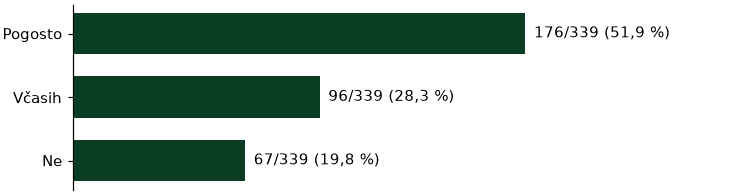
Med nujnimi 78 % (298/382). Skoraj vsak dan prizadene 71 % (209/293). Težave (n = 339): pogosto 52 %, včasih 28 %. Garažo bi želelo 45 % (145/320). Mediana najema 50 €/mesec (n = 124), nakupa 15.000 € (n = 95). Ponoči: urejeno 39 %, tudi zelenica/pločnik 28 %, garaža 24 %, ulica 10 % (n = 353).
»Predvsem parkirna politika ni urejena, morali bi urediti enosmerni promet parkiranje ob cestah ne pa na zelenica! To da se drevesa podira ker se sušijo, narediš pa ji da se nebi in nadomesti se jih stihijako.«
»Glavni problem je parkiranje, saj na račun avtomobilov izgubljamo prostor, ki je namenjen nam, prebivalcem. Prav tako mislim, da bi morali fizično omejiti tranzit čez naselje, npr. s slepimi ulicami, kar sicer oteži dostop do domov nam prebivalcem, vendar mislim da sta varnost in mir bolj pomembna. Osebno bi uredil parkiranje na obrobjih naselja, dostop do blokov pa bi bil samo za natovsarjanje/razovarjanje.«
Druga tema (60 %). Skoraj vsak dan 74 % (168/227). Novo ureditev 62 % oceni slabo ali katastrofalno (214/345). Enosmerne: da 48 %, ne 36 %, ne vem 16 % (n = 385). Dnevni prevoz: avto 37 %, kolo 31 %, peš 19 %, JPP 10 % (n = 347).
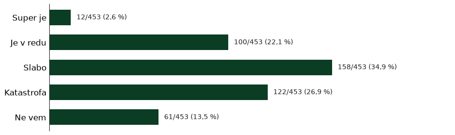
»Več ležečih policajev v okolici šole in vrtca, saj omejitev 30 skozi naselje ne zaleže.«
»Velika večina ulic bi morala biti enosmernih, na križišču dveh ulic v naselju bi bilo fajn imeti ogledalo (iz ene od ulic v naselju zavijaš na slepo levo proti lokal ker so avti parkirani na pločniku)«
»Na eni od ulic v naselju bi dodal še en ležeči policaj na drugem prehodu (pri vhodu na parkirišče za bencinska črpalka). V enem letu bi me že vsaj 3x povozili, ker vsi divjajo. Videl sem tudi nesrečo, ko je nekdo zbil otroški voziček. Na srečo je takrat otrok hodil zraven mame in ni bil v njem.«
Pogrešajo pošto (78 %) in banko (60 %) (n = 321).
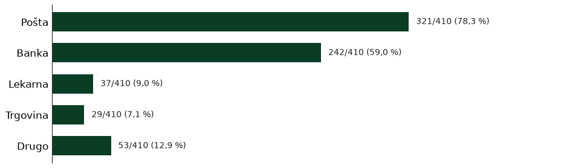
»ni več pošte, banke, izginja ta mikrosistem, ki je delal savsko naselje poseben«
»Slabo je, ker so vzeli pošto in bankomat ter banko. vsaj bankomat in pošta bi morala ostati, ogromno starih ljudi sploh ne zmore do pošte in gotovine. To je prometno območje s hrupom s cest, tega ni mogoče spremeniti.«
»Da je dokaj čisto in urejeno. Da imamo igrišca za otroke, trgovine. Manjka samo to kar so nam že vzeli; pošto, banko«
Med nujnimi 37 % (143/382). Skoraj vsak dan 27 %, nekajkrat na mesec 35 % (n = 143).
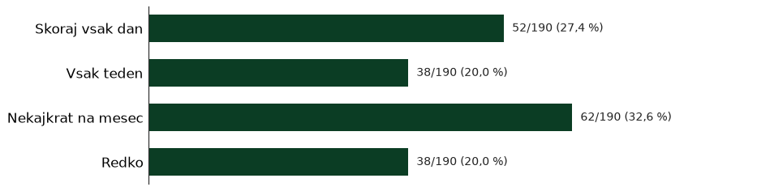
»Malo me skrbi porast vandalizma, vdorov, vlomov oz. kraj v naselju. Parkirišča pred nekatereimi zgradbami so seveda tudi problem - vsi parkirajo vsepovsod. AMpak to predvidevam da je na ravni stanovalcev, da se zmenimo za rešitve.«
Prav tako 37 % (140/382). Pri 65+ klop pogosto ali včasih pogreša skupaj 76 % (n = 33).
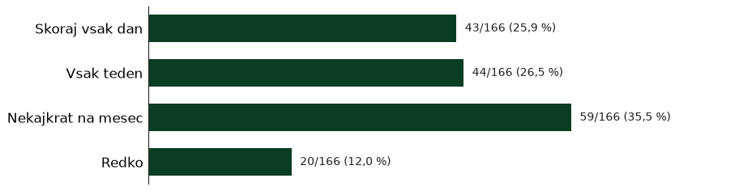
»Več klopc, več smetnjakov na igriščuh, javen wc«
»Premalo klopi v parkih in na igriščih. Tiste, ki so včasih bile umeščene v prostor (npr. igrišče na eni od ulic v naselju), so uničene in niso nadomeščene oz. obnovljene.«
Med nujnimi 31 %. Čistilne akcije podpira ≥1×/leto 88 % (n = 386).
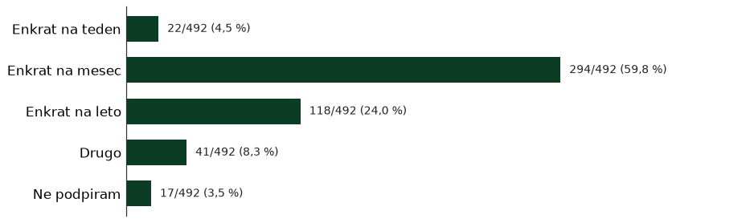
»Drugo: Mislim, da bi moral za čistočo vsak skrbeti sam. Predvsem vzgoja se začne doma. Nekaj pa tudi občina, da večkrat očisti naselje«
»Odlaganje odpadkov na eni od ulic v naselju - imamo skupne zabojnike z Merkatorjem, v njih pa je vse kaj drugo kar bi moralo biti. Želim si da bi bili zabojniki pod ključem in da bi ena oseba skrbela za pripravo zabojnikov ob odvozu. Opažam tudi da v zabojnike mečejo odpadke tudi drugi, ki smeti pripeljejo kar z avtomobilom. Opozoriti tudi merkator da v črne zabojnike ne sodi papir (za karton imajo poseben prostor za zbiranje).«
»Všeč mi je, da je veliko zelenja....lahko bi ga bilo še več. Razmeroma čista okolica, čeprav veliko ljudi/pasjih lastnikov ne pobira kakcev za svojimi ljubljenčki.«
Med 382, ki so izbrali teme, so drevesa in zelenice izbrali 89 (23 %), boljši zrak 80 (21 %), hrup 64 (17 %). Hrup izberejo redkeje, a tiste, ki ga izberejo, zadene najpogosteje. Kako pogosto jih to prizadene, je povedalo 85 (zelenje), 78 (zrak) in 63 (hrup): vsak teden zelenje 19/85 (22 %), zrak 8/78 (10 %), hrup 5/63 (8 %); nekajkrat na mesec zelenje 12/85 (14 %), zrak 10/78 (13 %), hrup 3/63 (5 %).
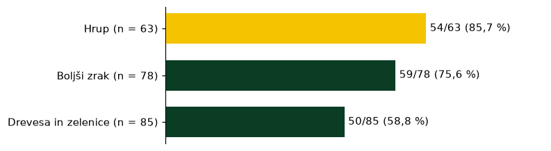
»Slabo vzdrzevane ceste, veliko blokov se ni pristopilo k obnovi fasad, nadomeščanje dreves po tem, ko kakšnega posežejo«
»Preveč se sliši ropotanje vlakovnih kompozicij. Naj dajo protihrupno ograjo, da se zmanjša hrup.«
Med nujnimi 23 %. Želje: druženje/kava 36 %, vadba starejši 29 %, delavnica 27 %, zbori 23 %, prostor za najstnike 20 % (n = 305).
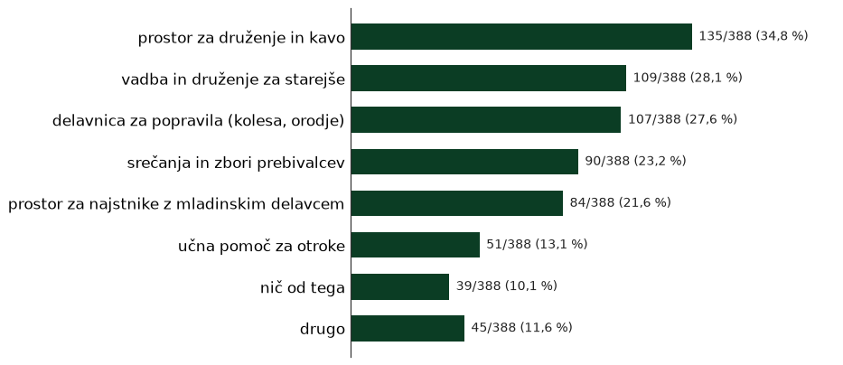
»zaktivirali bi, banka in pošta, to je katastrofa kar so nam vse vzeli, bankomata tudi ni več, je pri mercatorju, stopnice za na savski hrib, nastanitvena, dom skupnosti za starejše, kot šent za starejše, prostor za tiste kamor nikamor ne grejo, na kosilo in tako naprej, tisti ko nič ne, nekateri težko vstajajo zjutraj«
»Žal nismo dovolj proaktivni, da bi delovali kot skupnost. Manjka dogodkov, ki bi nas sosede povezovali. Manjka tudi posluha odločevalcev, da bi skupaj urejali sosesko.«
Igrišča/mladi 18 %. Pot v šolo/vrtec: kar varna 40 %, ne preveč varna 38 %, nevarna 15 %, zelo varna 7 % (n = 114).
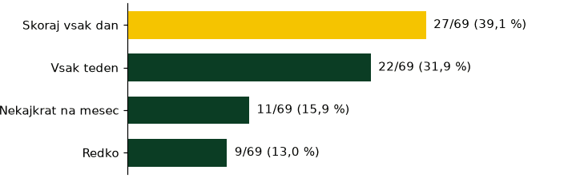
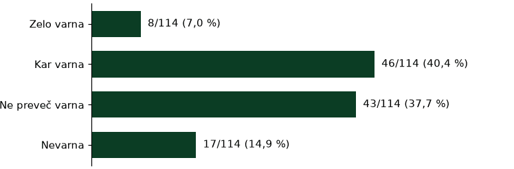
»Igrišče urediti zraven ene od ulic v naselju k je igrišče za kosarko in nogomet dotrajani in da se ustavi ljudi k parkerajo po zelenicah in na otroskih igralih«
»Ne moreš hodit po pločniku na eni od ulic v naselju zaradi parkiranih vozil. Parkirana vozila na zelenicah. Zaprto šolsko igrišče v popoldanskih urah. Če šola oddaja telovadnico za druge dejavnosti, naj zagotovi tudi parkirne prostore.«
Ocene 4–5: 48 % (186/386; v imenovalcu je tudi »Ne uporabljam«). Manjka: nič 41 %, osebni zdravnik 37 %, zobozdravnik 26 % (n = 348). Upravnik: odzivnost »malo/sploh ne« 48 % (152 od 315). Zbori: redno 48 % (n = 364).
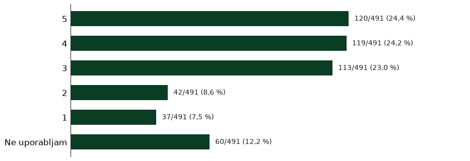
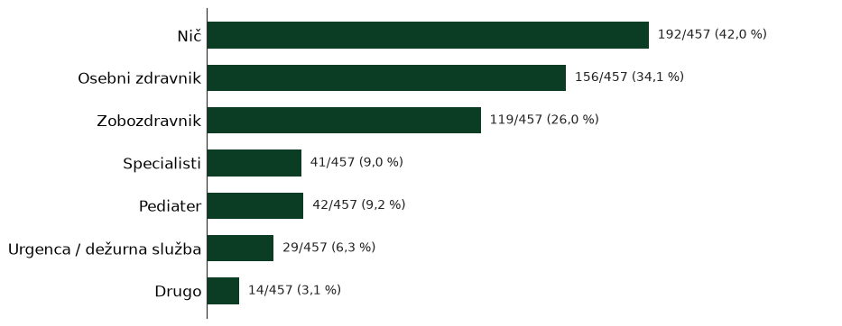
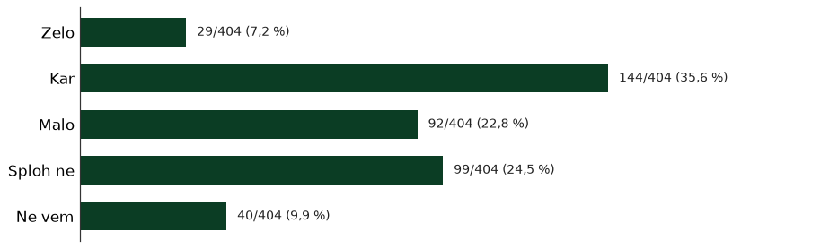
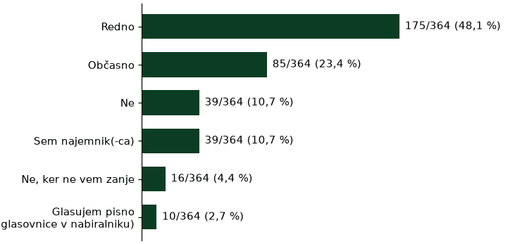
»v naselju bo potrebna vzpostavitev psihološke svetovalnice za ljudi z duševnimi težavami«
Kontakt za anketo: savskonaselje1@gmail.com · 070 205 595